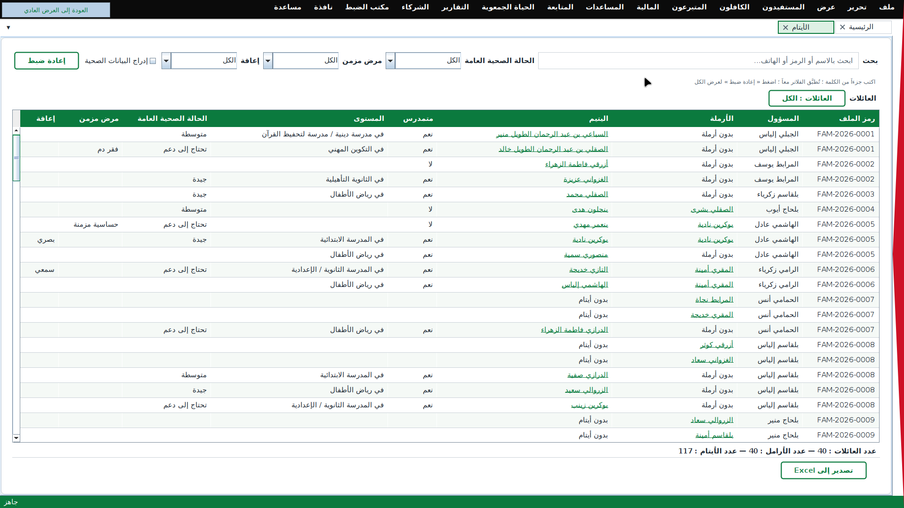
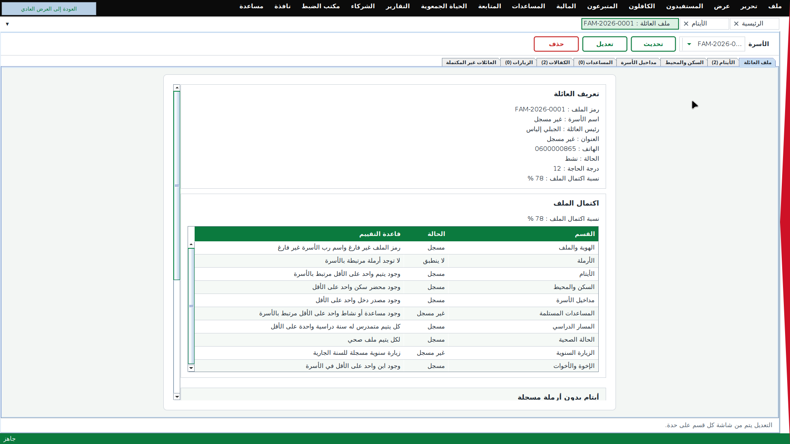

كل ملفات جمعيتكم في تطبيق واحد، بالعربية الكاملة
تطبيق مكتبي لإدارة الأسر والأرامل والأيتام والكفالات والتبرعات والوصولات والاتفاقيات والتقارير. يعمل على حاسوبكم دون الحاجة إلى إنترنت، وواجهته كلها عربية من اليمين إلى اليسار.
شاهد التطبيق في أقل من دقيقتين
فيديو تعريفي بالعربية الفصحى مع ترجمة مكتوبة · التطبيق مجاني · صدقة جارية
ماذا يقدّم التطبيق؟
صُمّم انطلاقاً من احتياجات جمعية حقيقية لكفالة الأيتام والأرامل، ثم عُمّم ليناسب الجمعيات الصغيرة والمتوسطة.
ملفات الأسر والأرامل والأيتام
ملف شامل لكل أسرة، مع بيانات الأرامل والأيتام والأوصياء، وروابط للانتقال بين الملفات بسهولة.
الكفالات والكفلاء
تسجيل الكفلاء والمتبرعين (أشخاصاً وجهات)، وربط الكفالات بالأيتام، ومتابعة الاستحقاقات والمتأخرات.
التبرعات والوصولات
تسجيل التبرعات وإصدار وصولات مرقّمة بتسلسل متصل، مع إمكانية إعادة الطباعة.
المالية وحالات الصرف
دفتر الصندوق والبنك، وحالات الصرف الشهرية بخطوتي مصادقة وتنفيذ، وصندوق الاستمرارية.
بحث متقدم وفلاتر
شريط بحث وفلاتر في كل قائمة، وبحث متقدم بمعايير متعددة، مع تصدير النتائج إلى Excel.
تقارير ولوحة قيادة
لوحة قيادة عند فتح التطبيق، وتقارير الأنشطة والمالية جاهزة للاطلاع والتصدير.
الشركاء والاتفاقيات
تسجيل الشركاء والاتفاقيات والأنشطة ومستنداتها في مكان واحد منظّم.
نسخ احتياطي بنقرة
نسخة احتياطية مؤرَّخة من القائمة، ومجلدات واضحة للبيانات والنسخ والمستندات.
كيف تبدأون؟
لا تثبيت معقّد، ولا حاجة إلى برامج إضافية أو صلاحيات المدير.
حمّلوا الحزمة
اختاروا الحزمة المناسبة لنظامكم (ويندوز أو لينكس) وحمّلوها مباشرة، دون تسجيل.
فكّوا الضغط وشغّلوا
على ويندوز: فك ضغط الملف ثم تشغيل AssociationOrphelins.exe. على لينكس: استخراج الأرشيف ثم تشغيل البرنامج.
ابدأوا بالعمل
يُنشئ التطبيق قاعدة بيانات فارغة عند أول تشغيل. أضيفوا أسرة، ثم أرملة، ثم يتيماً، وجرّبوا القوائم والتقارير.
لقطات من التطبيق
اللقطات التالية مأخوذة من بيانات تجريبية وهمية، وليست من بيانات حقيقية.



المنصّات والمتطلبات
ويندوز 10 و11 (64 بت)
حزمة محمولة: فك ضغط ثم تشغيل. لا يلزم تثبيت Java. قد يعرض ويندوز تحذير SmartScreen لأن التطبيق غير موقّع رقمياً.
لينكس (64 بت)
أرشيف tar.gz عام، وحزمة .deb لتوزيعات ديبيان وأوبونتو ومنت. لا يلزم تثبيت Java.
العمل دون إنترنت
لا يحتاج التطبيق إلى اتصال بالإنترنت للعمل. البيانات تُحفظ في ملفات على حاسوبكم.
أسئلة شائعة
لمن هذا التطبيق؟
للجمعيات الخيرية الصغيرة والمتوسطة التي ترعى الأيتام والأرامل وتحتاج إلى تنظيم ملفات الأسر والكفالات والتبرعات في برنامج عربي بسيط.
هل هو مصمَّم لبلد معيّن؟
نشأ في سياق جمعية مغربية، لذلك قد تجدون مصطلحات أو ممارسات مرتبطة بالمغرب. نرحّب بملاحظاتكم لتعميمه على باقي البلدان العربية (العملة، المصطلحات، الأنظمة المحلية).
أين تُحفظ البيانات؟
على حاسوبكم. في ويندوز داخل مجلد donnees بجانب البرنامج. في لينكس داخل مجلد البيانات الخاص بالمستخدم.
هل يمكن نقل البرنامج إلى حاسوب آخر؟
نعم. أغلقوا البرنامج، ثم انسخوا المجلد كاملاً (على ويندوز) إلى المكان الجديد، ولا تشغّلوا نسختين على البيانات نفسها في الوقت ذاته.
لماذا يظهر تحذير عند التشغيل على ويندوز؟
لأن التطبيق غير موقّع رقمياً بعد. اختاروا «معلومات إضافية» ثم «تشغيل على أي حال». يمكنكم التحقق من سلامة الملف بمطابقة بصمته SHA-256 المنشورة مع كل إصدار.
هل هو مجاني؟
نعم، هذا التطبيق صدقة جارية، يُقدَّم مجاناً ودون مقابل لكل من أراد الانتفاع به.
حمّلوا التطبيق
تحميل مباشر ومجاني، دون تسجيل ودون أي شرط. النسخة الحالية: 0.1.0 (تجريبية).
سجل الإصدارات وبصمات التحقق (SHA-256)
رأيكم يهمّنا
جرّبتم التطبيق؟ استبيان قصير (5 دقائق) اختياري يساعدنا على تحسينه. أخبرونا بما يعمل وما يعطّل عملكم وما ينقص.
املؤوا الاستبيان إبلاغ عن مشكلة